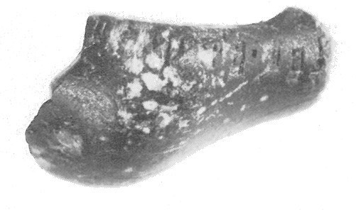
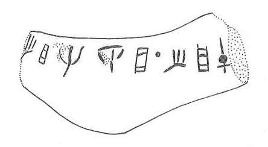

-
IOZa5
Names
IOZa5, IO Za 5
Support
Stone vessel
Location
Iouktas
Findspot
Unavailable


Scribe
Unavailable
Context
Unavailable
Dimensions
Catalogue
Readings
1 1 0 I none
1 1 0 JA none
1 1 0 RE none
1 1 0 DI none
1 1 0 JA none
1 1 1 *900 none
1 1 2 I none
1 1 2 JA none
1 1 2 PA none
𐘚𐘱𐘙𐘆𐘱𐄁𐘚𐘱𐘂
IJAREDIJA*900IJAPA
𐘚𐘱𐘙𐘆𐘱𐄁𐘚𐘱𐘂
IJAREDIJA*900IJAPA
IO Za 5
(HM 3643)
(GORILA V: 22-23), lamp or ladle fragemnt, chrlorite
]I-JA-RE-DI-JA
• I-JA-PA[
Commentary © John Younger
References
papers/GORILA-Vol5.pdf#page=75